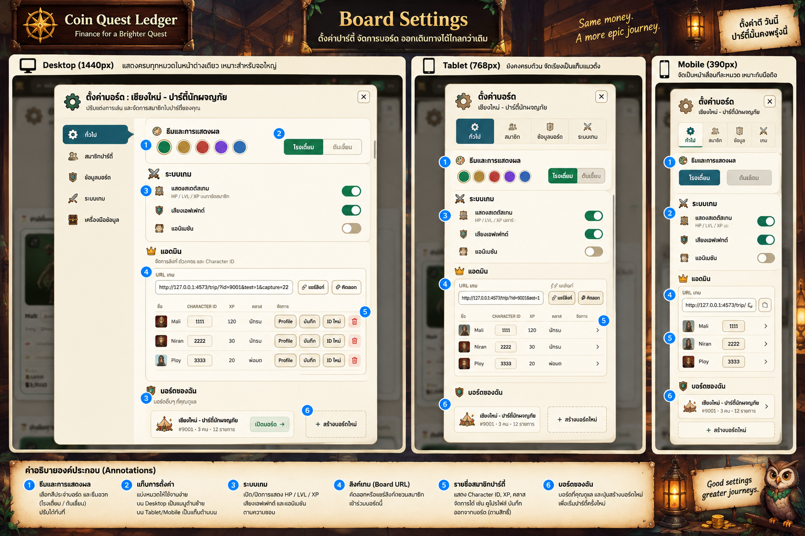
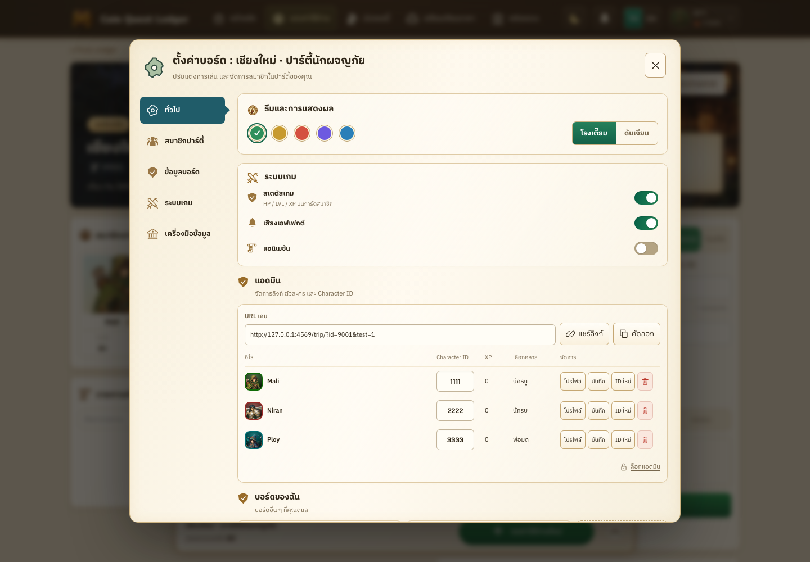

Reference includes illustrative members and a single owned board.

Actual app components and test records. Body scrolls for additional boards and data tools; compact views disclose member actions.
Desktop detail, normalized to the same dialog width. Reference framing is excluded; source images are unchanged.

